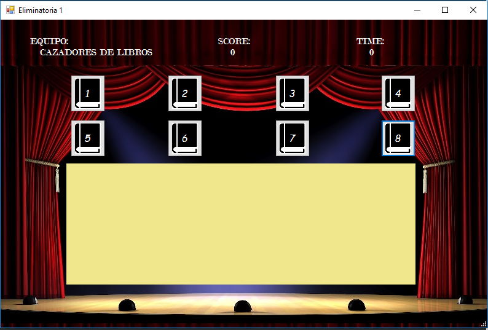

Volver a Inicio
Desde la interfaz mostrada en la siguiente imagen se debera elegir con
cual de las dos posibles eliminatorias se jugara

una vez dentro de cualquiera de las dos se nos presentara la siguiente
pantalla, donde cada boton numerado representa una posible pregunta
a elegir, seleccionada aleatoriamente de la base de datos.

una vez el jugador de click en alguno de los botones el tiempo comenzara a correr
y la pregunta, el libro al que pertenece y el ID de la base de datos se mostraran en pantalla
bloqueandose las demas opciones de pregunta
El participante tiene 25 segundos para responder a la pregunta, teniendo una advertencia auditiva
al restar 5 segundos en el temporizador (al mostrar 20 seg.).
A partir de los 15 segundos la opcion de responder sera habilita, con dos botones: correcto e incorrecto

Correcto
Agrega un punto al equipo en turno y muestra la respuesta correcta
Inorrecto
Mostrara tres botones:
- Siguiente: en caso de que ningun equipo desee hacer robo
- Respuesta: muestra la respuesta esperada, tambien en caso de que no se desee hacer robo
- Robo: entra en esta sbdivision del modo de juego ver mas Robo
Al finalizar el tiempo, se muestran tres botones siendo: siguiente, respuesta y robo

Respuesta
Mostrara la respuesta esperada para la pregunta en curso y dejara solamente acctivo el boton de siguiente

siguiente
Este boton permite continuar con la ronda, dando paso al turno del siguiente equipo.
Y mostrando un aviso con el numero de la ronda actual, cuando una de estas se finalice
En caso de que se presente una inconformidad por parte del equipo, o bien, la pregunta
presentada sea demasiado larga para leer en el tiempo establecido, el administrador puede
pulsar sobre la opcion de aclaracion para que el tiempo se detenga hasta que este boton vuelva a ser presionado
El proceso se repite hasta que alguno de los equipos alcance un total de 10 puntos.
Robo de puntos
Despues de haberse marcado la pregunta como respuesta equivocada y dar click en el boton de robo se
presentara una pantalla con un contador regresivo de 3, esto como medida interna para dar mayor
equidad en la elección del participante que va a robar
Un combo contienen la lista de equipo que pueden hacer el robo
Una vez seleccionado el equipo que realizara el robo, el contador comenzara a correr.
El equipo tiene 15 segundos para responder a la pregunta, la cual no sera mostrada
hasta que se marque la opcion de correcto o incorrecto.
Posterior a esto se vulve a la pantalla de juego para continuar o iniciar una nueva ronda
Regresar